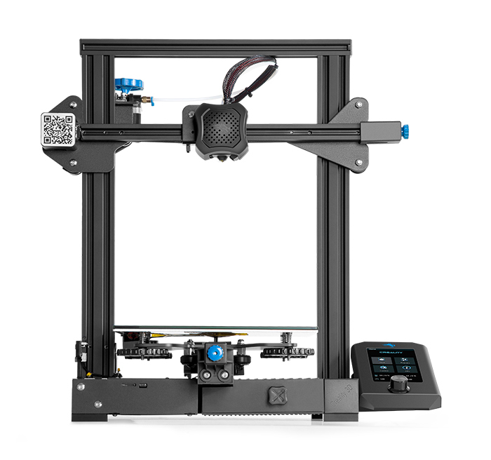

Verkefni 3 - 3D prentun og skönnun
Fyrir þetta verkefni fer ég yfir hvernig ég þrívaddarprentaði mitt eigið módel og þrívíddar skannaði raunverulegan hlut með photogrammetríu. Áherslu atriði þessa verkefnis liggur í þrívíddar prentinu, en það er umfangsmeira verkefni en skönnunin, sem er talsvert fljótgerð. Því verður meira lagt til frásagnar af prent ferlinu, allt frá hönnun til samsetningar.
Líkt og með síðasta verkefni verður frásögninni hagað sem leiðbeiningum, þar sem framkvæmdinni er skipt upp í aðgreinanleg skref þar sem lesendanum verður leiðbeint hvernig hann skyldi fara að því að framkvæma eftirlíkingu af mínu módelim jafnframt því sem ég greini frá eigin mistökum, því sem fór vel og mögulega hvað hefði mátt fara enn betur.
Handknúinn blómapottur
Þrívíddar prentið mitt er mitt eigið hugverk og var hugsað sem skalað niður módel af framtíðar verkefni hjá mér, sjálvirkum blómapotti, en til einföldunar á þessu verkefni verður módelið ekki sjálfvirkt, heldur handknúið. taka skal fram að hér eftir verður vísað í módelið einfaldelga sem "pottinn".
Eins og sést á myndinni er kaffimál aftan við pottinn, sem var ekki viljaverk en hentar vel til þess að sýna skala pottsins. í miðju pottarins er vatnstankur sem getur smá geymslurými undir vatn. Neðst í tankinum eru leiðslur fyrir vatn sem leiða vatn út um ranana sem sjást á myndinni þegar hylkinu efst á pottinum er þrýst niður.
Skref 0 - Teikningar
Eins og fyrir öll önnur fyrirhuguð stórverk, Þarf að byrja á því að leggja höfuðið í bleyti. Ég byrjaði á því að ræða við nokkra plöntu unnendur um hvað þeir myndi vilja sjá í sjálfvirkum blómapotti, en sjálfur hafði ég fyrirhugað að vatnið sem myndi vökva pottinn kæmi út að ofanverðu og í nokkrum straumlínum. Utan þess að blómapotturinn yrði að vera myndarlegur og heilslegur í útliti voru ekki settar æutlitslegar skorður á verkefnið frá þessum umræddu plöntuunnendum svo ég hefði nokkurnveginn frjálsar hendur til hönnunarinnar. Svo ég hóf að teikna drög að mínum pottinum í Fusion 360 teikni hugbúnaðinum.
Á myndinni að ofan er hlekkur sem leiðir þangað er stúdentar og kennarar geta hlaðið niður hugbúnaðinum.
Þegar hlutur er hannaður til þrívíddarprentunar er gott að laga hann að getum prentarans og prentferlisins. Sjálfur hef ég reynslu af þessu og komin með tilfinningu fyrir hönnunarferlinu, var því hluturinn hannaður áður en nokkur sérsniðin próf á prentaranum voru framkvæmd fyrir pottinn. Eftir nokkrar svipaðar ítranir á hönnuninni var niðurstða komin í málið og sýni ég hér að neðan skref fyrir skref hvernig skal fara að því að teikna pottinn.
Skref 1 - Teikna tankinn
Byrja skal á því að teikna sketch í Fusion af jaðar tanksins og vatns leiðslunum.
Byrja skal á því að teikna tvo hringi, þann ytri og innri. Þeir eru veggir tanksins. Ég setti þann ytri sem 49 mm í parametrískri breytu og bilið á milli þeirra fast sem 6 mm. Þannig má skala veggina upp án þess að veggþykktin breytist. Teikna skal síðan lítinn hring með d =3 mm á milli veggjana. Velja síðan Create >> Circular pattern og búa til 7 afrit af minni hringum umhverfis ytri hringina með jöfnu millibili. Velja skal síðan Finish sketch >> extrude . Þaðan skal velja planið sem var verið að teikna og velja öll lokuð svæði nema litlu hringina (Sjá skilgreiningu á lokuðu svæði í verkefni 2 á þessari vefsíðu ), síðan skal þrýsta planinu út um 50 mm.
Þessu á eftir skal velja New sketch, og velja síðan annanhvorn slétta flötinn á hlutnum sem hefur myndast. teikna skal tvo hringi sammiðja veggjunum. Annar þeirra skal hafa sama þvermál og ytri veggur tanksins (49 mm), hinn skal hafa þvermálið d = 47.25 mm. Næst skal ljúka teikningunni og aftur velja Extrude . velja skal að þrýsta niður lokaða svæðinu á milli þessara tveggja hringja um 4 mm.
Nú skal loka sívalningnum sömu megin og síðasta teikning var teiknuð. Velja skal því að hefja nýja teikningu á yfirborðinu sem myndaðist við síðasta Extrude og teikna annan hring sammiðja sívalningnum með d = 49 mm. Lokaða svæðinu sem myndast skal síðan þrýsta niður um 3 mm. Þetta extrude mun koma til með að vera botninn á tankinum.
Að þessu loknu ætti þverskurðurinn af módelinu að líta út eins og á myndunum að neðan.
Rauða svæðið á myndunum táknar fast efni. Hægt er að skoða þverskurð af módelinu í Fusion með Inspect >> Section analysis og velja síðan planið þar sem á að skera.
tankurinn okkar er nú lokaður að neðan og getur haldið vatnið, næsta skref er að teikna ranana/stútana sem vísa niður í átt að pottinum sjálfum, þar sem plönturnar myndu vera. Þá skal hefja nýja teikningu (e. sketch ), á opna efra yfirborðinu, teikna hring sem er sammiðja einhverju af vatnleiðslugötunum en með snertipunkta á bæði ytri og innri veggjum tanksins.

Næst skal teikna 9 mm langa línu frá miðju þessa hrings í stefnu hornrétt út frá veggjum tanksins og ljúka þessum sketch. Næst skal hefja nýjan sketch í plani, samsíða línunni sem verið var að teikna, eins og planið sem sést á myndinni að neðan Mögulega þarf að búa það til ef ekki var valið að teikna línuna á hentuga vatnsleiðslu, Construct >> Plane at angle og velja síðan einhvað þæginlegt plan til þess að miða við.
Create >> Arc >> Three point arc sem er samsíða línunni með r = 4.85 mm og miðju staðsetta 3.7 mm frá miðju vatnsleiðslunnar, miðja bogans skal einnig vera 1.15 mm neðan er yfirborð tanksins sem sést nú.
Næst skal velja loft hnappin með Create >> Loft og velja profile sem sívalningin sem er lokaða svæðið milli vatnsleiðslunnar og síðasta hringsins sem teiknað var og velja skal bogann sem path, aðrar stillingar skulu hafðar eins og á myndinni að neðan

Næst skal velja Create >> Pattern >> Circulat pattern velja skal síðan ranan sem hefur myndast og velja að gera átta afrit umhverfis sívalningin ( átta meðtöldum þessum er hefur þegar myndast ). Aðrar stillingar skulu hafðar eins og á myndinni að neðan.
Þessu á eftir skal velja extrude og þrýsta upp svæðinu sem sést hér að neðan upp um 6 mm
Næst hefst síðusta teikningu tanksins og velja skal yfirborðið þess að ofan sem var verið að þrýsta út. Einfaldlega þarf að velja Create >> Project og velja ytri og innri vegg sívalningsins til þess að varpa útlínum þeirra á sketch planið.
Ljúka má teikningunni og velja aftur extrude til þess að þrýsta nú þessu svæði upp um 1 mm til þess að loka fyrir götin
Að lokum skal velja Fillet og rúna skal hornin sem sjást á myndinni að neðan um 2 mm
Nú hefur tankurinn verið myndaður til fulls, en Það skal viðurkennast að líklega væri mun skilvirkara að teikna tankinn án vatnsleiðslanna, en skilja bara nægilegt pláss fyrir þær og skera þær síðan út þegar tankurinn hefur verið myndaður. Sjálfur hugaði ég mér að gera það, en vegna mikils álags í skólanum gafst mér ekki tími til þess að reyna finna út úr því heldur fór ég einföldustu leiðina með minni teikniþekkingu á þeirri stundu.
Skref 2 - Teikna pottinn
Næst á dagskrá er ð teikna pottinn sjálfan, en þá skal bara hefja nýtt sketsch, en eingöngu er þörf á einum slíkum fyrir pottinn
Til þess að fá pottinn fram er nóg að teikna þverksurð af einum enda hans, þar sem hann er jú hringlaga getum við snúið honum um ás sinn og myndað þannig heilan hlut. Myndin að ofan er af lokuðu svæði samsett úr línum og bogum, Ég mun ekki fara yfir skref fyrir skref hvernig skal teikna formið á myndinni að neðan sökum einfaldleika, en grófa útskýringin er sú að teikna þarf kössótta formið með opi að ofan sem sést á myndinni með ytri og innri veggi. veggþykktin hjá mér eru 2 mm og er sú stærð ein af tvem stærðum sem er ekki prametruð hjá mér á myndinni. Á vinstri efri hlið kössótta formsins er nokkurskonar rúnóttur vængur sem á að hafa þann eiginleika að ef vatnið úr rönum tanksins skjóta vatninu of langt vegna ofþrýstings fari eitthvað af því á hliðarnar og renni síðan niður í pottinn. Einnig finnst mér vængirnir gefa pottinum fagurfræðilegt útlit.Sjálfur parametraði ég teikninguna af pottinum þannig að aðeins væru tvær óháðar breytur, breydd og hæð kössótta formsins. Restin af málsetningunum er háð hæð pottsins eins og mér þótti unnt. Ferlið var þannig að vængurinn var teiknaður nokkurnveginn fríhendis með bogum og línum án nokkura pælinga þar til hann leit vel út og síðan voru einingar hans málsettar og og gerðar háðar hæð pottsins þannig ef maður skyldi vilja auka hæðina breytast stærðarhæutföll vængsins með í sömu hlutföllum og hlutfall stærðaraukningar hæðarinnar.
Á myndinni af teikningunni sést lárétt lína 24.8 mm að lengd og út úr henni rís lóðrétt lína. Þetta er gert til þess að sýna beturað lóðrétta línan sé í 24.8 mm fjarlægð frá innri hlið pottsins, en um hana ætlum við að snúa lokaða svæðinu sem teiknningin myndar.Þetta þýðir að potturinn muni hafa innri radíus sem er 0.6 mm meira að þvermáli heldur en ytri veggur tanksins og því 0.3 mm bil milli vegjja þeirra. Ástæaðan fyrir því að bilið milli þeirra er 0.3 mm er sú að ég þekki prentarann sem ég ætla nota til prentsins vel, en hann er einmitt minn eigin og skilrúm upp á 0.3 mm hentar vel til þess að auðvelt sé að renna hlutum meðfram hvor öðrum án þess að mikið bil sé á milli þeirra.
Nú skal ljúka teikningunni og velja Revolve. Velja skal Profile sem lokaða svæðið á teikningunni og Axis sem lóðréttu línuna sem fjallað var um. Aðrar stillingar skulu hafðar eins og á myndinni að neðan
Nú skal velja Fillet og rúna þær hliðar er sjást á vinstri myndinni að neðan um 3 mm og þá hlið sem er á hægri myndinni um 4 mm
Potturinn er nú tilbúinn og þarf einungis að hanna einhverskonar tól til þess að þrýsta vatninu sem mun koma til með að vera geymt í tanknum inn um vatnsleiðslurnar og út um rananna. Mér datt í hug nokkurskonar strokk sem rennur niður hólf tanksins og þrýstir vatninu með því að ýta á yfirborð þess. Þetta var ekki góð hugmynd eins og við munum koma til með að sjá en ég mun fara aðeins í gegn um það hér að neðan.
Skorðan sem verkar á hönnun strokksins er sú að að flöturinn á honum sem mun ýta vatninu fylli upp hverja flatarmálsþversneið í vatnshólfnu svo sem minnst af vatni renni upp yfir hann, en á sama tíma þarf að vera einvert bil á milli strokksins og hólfsins þannig að hægt sé að ýta honum niður. Það þarf því að framkvæma prófanir á prentaranum þess efnis.
Skref 3 - Fit test
Nú er að framkvæma fit test. Til þess að spara tíma prenta ég út stuttan sívalningshólk með ytra þvermál d_y = 5 mm, næst prenta ég æut nokkur rör með mismunandi innri þvermálum nálægt þvermáli hólksins Síðan skoða ég hvort hólkurinn passi inn í hvert rör og hversu erfitt er að koma honum inn í það. Markmiðið er náttúrulega að snertiflöturinn milli hlutanna sé þéttur og þokkalega auðvelt sé að renna hólknum meðfram gati rörsins. Til þess að geta greint á milli röranna merki ég þau með götum eins og sést á hægri myndinni að neðan.
Til þess að framkvæma testið þarf náttúrulega að prenta hlutinn. Til þess breytum við Fusion 360 teikningunni yfir í STL skrá með File >> Export og velja síðan eins og á myndinni að neðan

Næst þurfum við að gera skránna tilbúna til pretunar og hafa hendi í prentferlinu, eða eins og kallað er á mannamáli "að slice'a" skránna. Þetta gerum við með aðstoð slicer forritsins Cura. Það verður að velja réttan prentara í forritinu áður en skráin er opnuð innan þess, og ég vel því Ender 3 v2. Á myndbandinu að neðan útskýri ég lítillega hvernig skal athafnast í Cura slicernum með testið sem sýnidæmi.
Þá skal prenta hlutinn og bíða þolinmótt af dáð. Þegar prentið ehefur klárast er eftir engu að bíða og skal fara strax í fit testið.
Ég prentaði út ásamt rörunum, hólkinn, en ég sýni ekki frá því sökum einfaldleika. Ég mátaði hólkinn við rörin og komst að því að 0.3 mm munur á þvermáli hentaði vel.
Skref 4 - Strokkur/Loftþjappa
Næst var því að teikna strokkinn, en vegna þess hve illa sú hugmynd kom út mun ég ekki sýna teikninguna af honum, heldur útkomuna.
Strokurinn kom í sjálfu sér reyndar ekki illa út, en hann var vanþróuð hugmynd. Ég hefði semsagt áhyggjur af því að skaftið á honum myndi brotna ef ég skyldi tosa hann út of harkalega og myndi þá sjífan á honum sitja eftir í tankinum. Því hófst hönnunarferlið á nýtt.
Í stað þess að nota einhvern hlut til þess að nota einhvern hlut til þess að þrýsta á vatnið hugsaði ég mér að gott væri að búa frekar til loftþjöððu utan um hólf tanksins. Eitthvað sem getur þannig minnkað rúmmál loftsins innan tanksins en samstundis ekki hleypt frekara lofti inn. En sakmkvæmt gasjöfnunni gildir að ef hitastig er fasti, þá er samband þrýstings í öfugu hlutfalli við rúmmál
$${P \propto \frac{1}{V}}$$Og hér leyfum við okkur að koma fram við andrúmsloft sem eðalgas. Niðurstaða hönnunarinnar var einfaldlega svona
Hér að ofan er afmynduð Fusion skrá af þjöppunni sem hægt er að interacta við. Þetta eru tvö hylki, annað lokað að neðan, en hitt er opið að ofan og neðan. Neðra hylkið á að þrýsta inn í vatnstankinn og það efra (Það lokaða) á að renna meðrfram því neðra. Þegar efra hylkinu er rennt niður mun rúm loftsins minnka innan í neðra hyllkinu og þrýstingur mun verka á vatnið að neðan sem mun ýta því út um rana tanksins. Ég mun ekki sýna hvernig ég teiknaði þessa samstæðu en hægt verður að hlaða niður skjölum af öllum teikningum neðarlega á síðunni.
Testið sem var framkvæmt áðan hefur ekki verið gert gagnslaust vegna þess að sömu kröfur gilda um þjöppuna og um strokkinn. Þ.e. lokaða hylkið og strokkinn og því nota ég 0.3 mm bil milli aðliggjandi þvermála á hylkjunum.
Skref 5 - Slicer og þrívíddar prentun
Næst er að prenta alla romsuna.Við förumm svipað að og í síðasta myndbandi en í myndbandinu að neðan tala ég um stillingarnar fyrir tankinn í slice'ernum.
Ég náði ekki myndum af prentinu sem misheppnaðist, áður en það kom í ljós að það hefði misheppnast og biðst ég velvirðingar á því, en hvet jafnframt lesandann til þess að nota ýmindunaraflið.
Hér koma nokkrar myndir af prenti tanksins sem heppnaðist.
Á myndinni að ofan til hægri sést betur að það getur skipt máli hvernig supports í Cura sliice'ernum er háttað. Ef support'ið hefði ekki haft neitt bil á milli þess og tanksins hefði það einfaldlega fest sig við hann, á nú líka svona stórum snertifleti.
Ég fór eiginlega nákvæmlega eins að því að prenta skálina og loftþjöppuna og fyrir tankinn og set ég því einfaldlega bara myndir af útkomuni á því, þó svo að ég hafi nú aftur gleymt að taka myndir af prenti loftþjöppunnar.
Skref 6 - Prófa samsetninguna
Nú þegar allt hefur verið prentað er um að gera að prófa módelið og athuga hvort þetta steðfesti ekki "proof of concept" en þetta verkefni hjá mér er í rauninni bara það, ásamt því að komast að því hvar helstu vandamálin liggja í hönnuninni. Að neðan er myndband af mér prófa samsetninguna.
Eitt af skylirðum verkefnisins er að ekki sé hægt að framkvæma módelið með frádráttar aðferð. Auðvelt er að færa rök fyrir því að það sé ekki hægt fyrir tankinn, en vegna þess að vatnsleiðislurnar fara í gegnum ranann sem er sívalningur þrýstur út eftir kúrvu væri ekki hægt að framkvæma það með frádráttar aðferð, einnig væri erfitt eða ómögulegt að framkvæma skylndilegu breytinguna í þvermáli í botni tanksins, þar sem vatnsleiðslurnar hefja að taka inn vatn. Allt annað í þessu verkefni væri hægt að framkvæma með frádráttar aðferð með réttum verkfærum.
Niðurhal- STL skrár
Þrívíddar skönnun
Þetta er Seinni hluti verkefnisins, en það eina sem krafist er er að maður skanni einhvern hlut með photogammetríu. Ég hlóð niður fullt af slíkum forritum í símann minn fyrir mislítið gjald. Flest reyndust þau vera meira draslið hvert á fætur öðru en ég er alls ekki hrifinn af Trnio forritinu.
Það sem ég vildi ná að skanna var ég sjálfur svo ég geti prentað litla styttu af mér í þeim tilgangi að gefa aðdáendum. Þetta reyndist seig þraut en að lokum tókst mér að skanna tölvumúsina mína í skaðabætur. Forritið sem ég notaði í það heitir Trnio og skildingurinn sem fór í það eru án efa verstu 6 dollarar sem ég hef eytt á ævi minni. Eftir fjölmörg reiðisköst tókst mér loks að fá eitthvað út úr þessu sem líktist ekki rotinni drullu.
Ég tók um það bil 100 myndir frá mismunandi sjónarhornum af músinni sem ég lagði á gólfið til þess að fá sem einstleitasta bakgrunninn. Síðan hló' ég þeim inn í appið í símanum (Trnio) og það sér sjálfkrafa um rest. Ég hef enga hugmynd afhverju fyrri tilraunir virkuðu ekki en ég framkvæmdi þær nákvæmlega eins, eini munurinn liggur í því að í þeim flestum tók ég færri myndir, eða um það bil 50 stk.
Útkoman var þessi hér að neðan.
Meshið kom ekki vel út, en þett er í raun það besta sem ég fékk og læt ég þetta því vera hér sem formleg skil. Eins og ég segi gerði ég þetta í símanum mínum en ég gerði margar tilraunir í að nota 3d Zephyr til verksins sem skilaði alltaf verri niðurstöðum með sömu myndum. Ef músin mín væri þráðlaus (laus við snúruna hefði þetta mögulega komið betur út. Að neðan má hlaða niður OBJ skránni af músinni